暑假实验报告合集 By 吴承宇
本次暑假一共有 4 个实验，分别是：
实验者：吴承宇
鸡蛋泡醋
实验者：吴承宇 日期：2022-7-26 ~ 2022-7-27
实验过程
首先，准备一枚鸡蛋、一个杯子(盛放)、一瓶白醋。
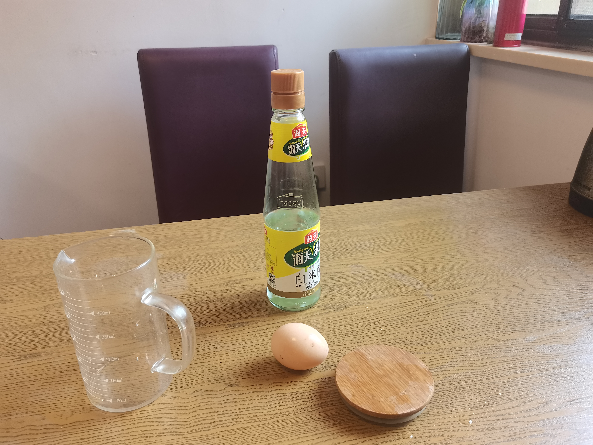
将白醋缓慢地倾倒入杯子，在大约 1/3 处停止倾倒。 将鸡蛋缓慢地放入，然后合上杯子。
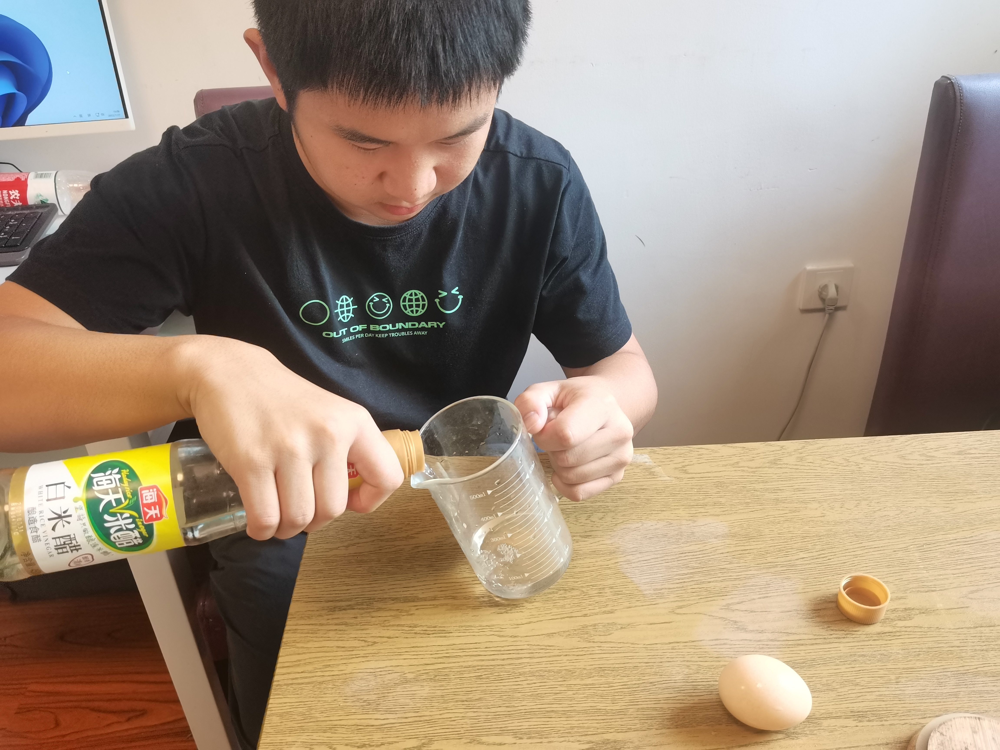
刚刚放入的时候
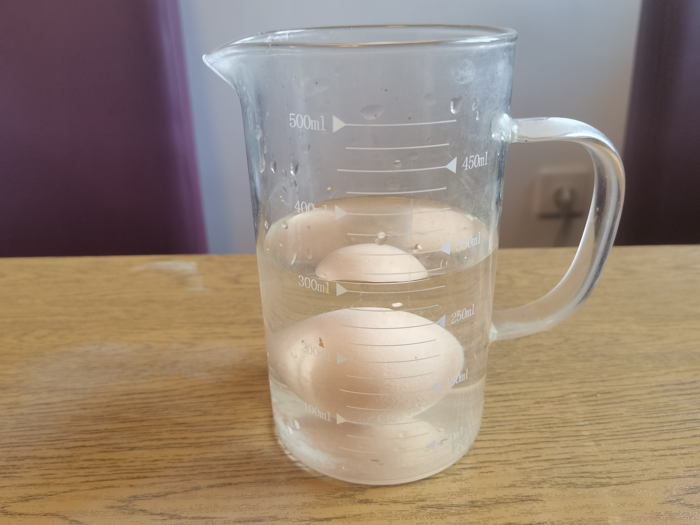
25分钟以后
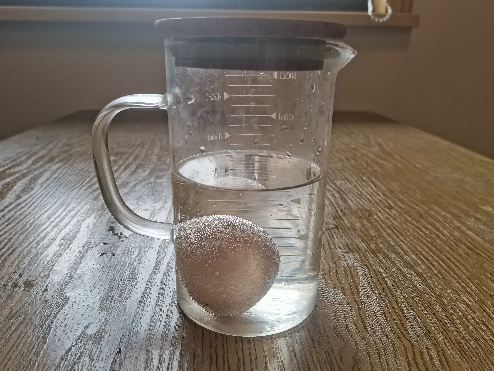
24小时以后
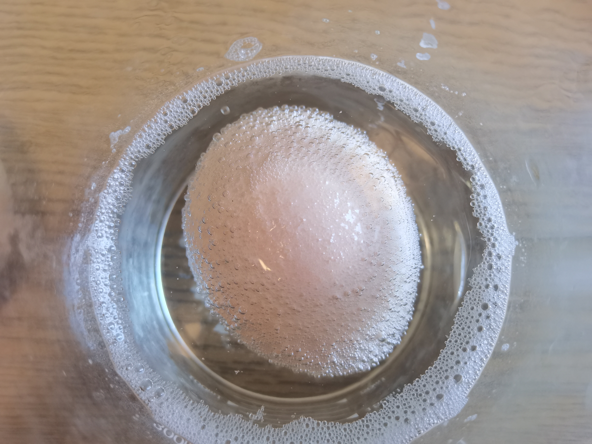将鸡蛋从杯子中取出，发现蛋壳几乎已经消失，鸡蛋的膜仍然存在。 从中得出，鸡蛋壳中的物质可以和白醋发生反应，产生气体。
经过验证，该气体为\( \text{CO}_{\text{2} } \)
杆秤制作
自制酸碱指示剂并实验它在酸性和碱性、中性溶液中各显什么颜色
实验者：吴承宇 日期：2022-8-9
该实验步骤较多，将分页面进行介绍。请看下一页。
自制酸碱指示剂并且验证
实验准备：一个紫甘蓝，几朵牵牛花、美人蕉和一个红萝卜。 以及，4个针筒、4个小碗和20个杯子。 盐，糖还有鸡精。 一瓶白醋，一包小苏打，一瓶矿泉水

首先，将紫甘蓝和红萝卜剥皮、摘下牵牛花和美人蕉的花瓣。将其各自捣碎，如果可以放到榨汁机里面兑少量水（或兑少量水后使用擀面杖捣碎），各自过滤放到各自的碗里，贴好标签。
以紫甘蓝、牵牛花、红萝卜、美人蕉的顺序排列3个小碗。
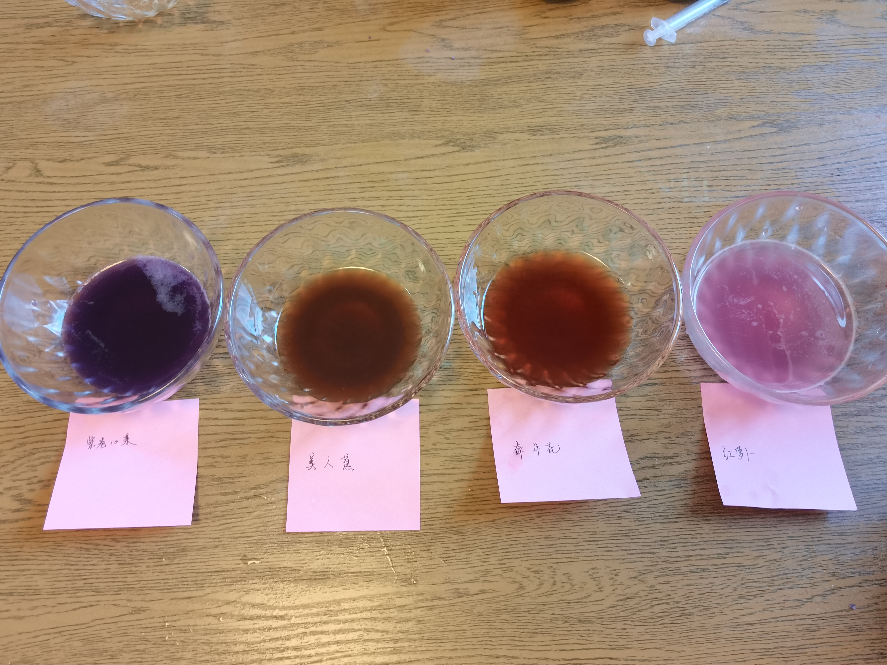
将白醋和矿泉水分别倒入一个空杯子，约4/5处。
在第三个杯子中，放入小苏打，并且倒入水，搅拌至全部溶解。
以白醋、小苏打水和矿泉水的顺序排列3个杯子。
紫甘蓝作为酸碱指示剂
将 3 个杯子中的液体分别取约 1/4 倒入一个空杯。
将紫甘蓝汁使用针筒吸收至针筒 1/3 处，滴入白醋中。 再取 1/3 筒，滴入苏打水溶液中。 再取 1/3 筒，滴入矿泉水中。
以上操作执行 3 次，发现：
- 原来透明的白醋变成了粉红色
- 原来透明的苏打水变成了青绿色
- 原来透明的矿泉水变成了紫色
使用牵牛花、红萝卜、美人蕉按照上述步骤操作，发现：
| 植物 | 原来溶液颜色 | 滴入白醋中后 | 滴入苏打水中后 | 滴入矿泉水中后 |
|---|---|---|---|---|
| 紫甘蓝 | 紫色 | 粉红色 | 青绿色 | 紫色 |
| 牵牛花 | 棕红色 | 嫩红色 | 茶绿色 | 淡棕色 |
| 红萝卜 | 淡粉色 | 粉红色 | 白色（微紫） | 淡粉色 |
| 美人蕉 | 褐色 | 淡褐色 | 茶褐色 | 褐色 |

使用指示剂测试家里面其他物品的酸碱性（探究）
使用 紫甘蓝溶液 作为酸碱指示剂，因为其颜色分明而且辨析度高。
- 将紫甘蓝溶液滴入食盐水溶液中(\( \text{NaCl} \))，发现呈现紫色
- 将紫甘蓝溶液滴入糖水溶液中(\( \text{C}_{\text{6} }\text{H} _{10}\text{O} _\text{5} \))，发现略微呈现蓝色（主体为紫色）
- 将紫甘蓝溶液滴入鸡精溶液中(略
(是我不会))，发现呈现蓝色
因此，可以（粗略地）得出， 食盐水溶液呈中性，糖水溶液呈弱碱性，鸡精溶液呈碱性。
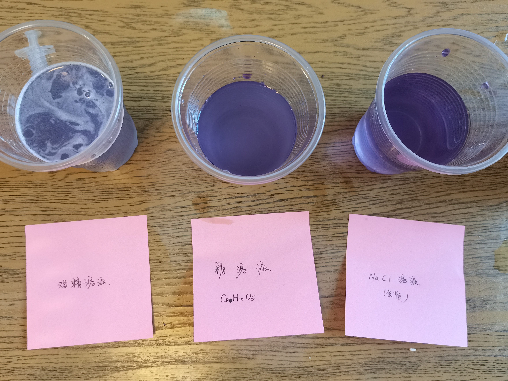
如果觉得不对应该是拍照视角不好，
把屏幕扭一下（bushi（逃
番外：酸碱中和
突发奇想，把他全部混在一起
白醋和小苏打反应，以普遍理性而论
\[ CH_3COOH+NaHCO3 === CH_3COONa+H_2O+CO_2 \]
会放出 \( CO_2 \)。
当我们把一切混进去的时候，发现原来的表格：
植物 原来溶液颜色 滴入白醋中后 滴入苏打水中后 滴入矿泉水中后 紫甘蓝 紫色 粉红色 青绿色 紫色 牵牛花 棕红色 嫩红色 茶绿色 淡棕色 红萝卜 淡粉色 粉红色 白色（微紫） 淡粉色 美人蕉 褐色 淡褐色 茶褐色 褐色
所有的颜色变成了这样
| 植物 | 溶液颜色 | 后来的颜色 |
|---|---|---|
| 紫甘蓝 | 紫色 | 紫色 |
| 牵牛花 | 棕红色 | 淡棕色 |
| 红萝卜 | 淡粉色 | 淡粉色 |
| 美人蕉 | 褐色 | 褐色 |
很显然，发生了中和反应

和原来的无异，因此也可以说明酸碱中和的产物是中性的。
金属生锈的条件
该实验为时间 1 周的长期观察实验，挑选最具代表性的准备、第一天、倒数第三天与结果着重讲述。
实验日期：2022-7-31 ~ 2022-8-6
实验者：吴承宇
详细请见下页。
实验准备
- 5个空瓶
- 15个铁钉
- 2根绳子
- 一点点食盐溶液
- 一点点白醋
实验准备步骤
将 5 个瓶子按照 (I, II, III, IV, V) 的顺序使用蓝色胶带标记。
| 瓶子 | 内容 |
|---|---|
| I | 把洁净的铁钉放在干燥的矿泉水瓶里，拧紧瓶口 |
| II | 把洁净的铁钉全部浸没在盛满煮沸过的水中的矿泉水瓶里，拧紧瓶口 |
| III | 把洁净的铁钉放在盛有煮沸过的水中的矿泉水瓶中，一半浸入水中，把瓶口敞口放置 |
| IV | 把洁净的铁钉放在盛有食盐水的矿泉水瓶中，一半浸入水中，把瓶口敞口放置 |
| V | 把用白醋浸过的铁钉放在干燥的矿泉水瓶中，把瓶口敞口放置 |
其中，(III, IV)组使用绳子系在瓶口吊着。每组放置相同的 3 枚铁钉。
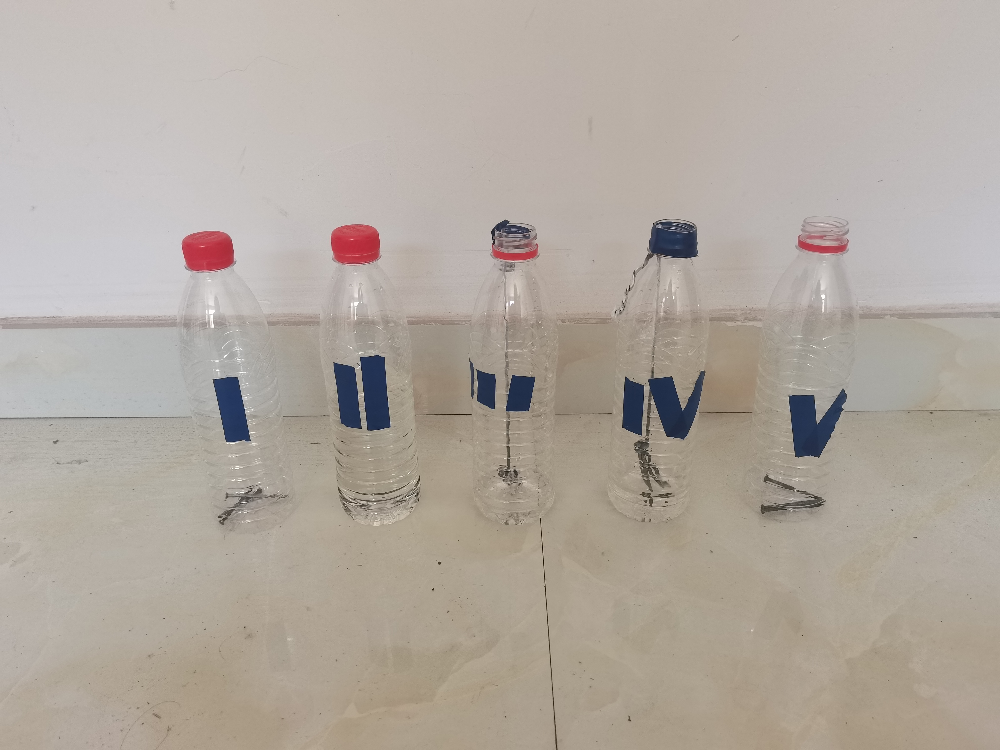
观察第一天
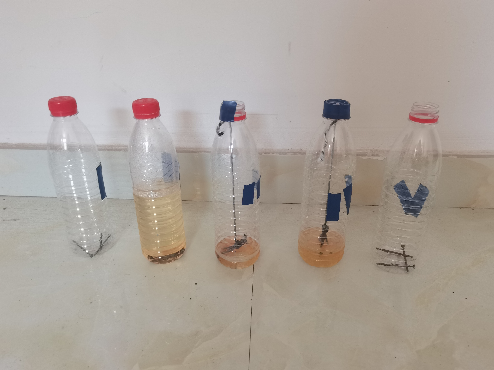
可以看到，第一个瓶子没有生锈。
而然，第二个瓶子开始略微生锈，但是远没有第三个瓶子锈得厉害。第三个比第四个瓶子锈得更加厉害。
第五个瓶子已经完全生锈。
观察第四天
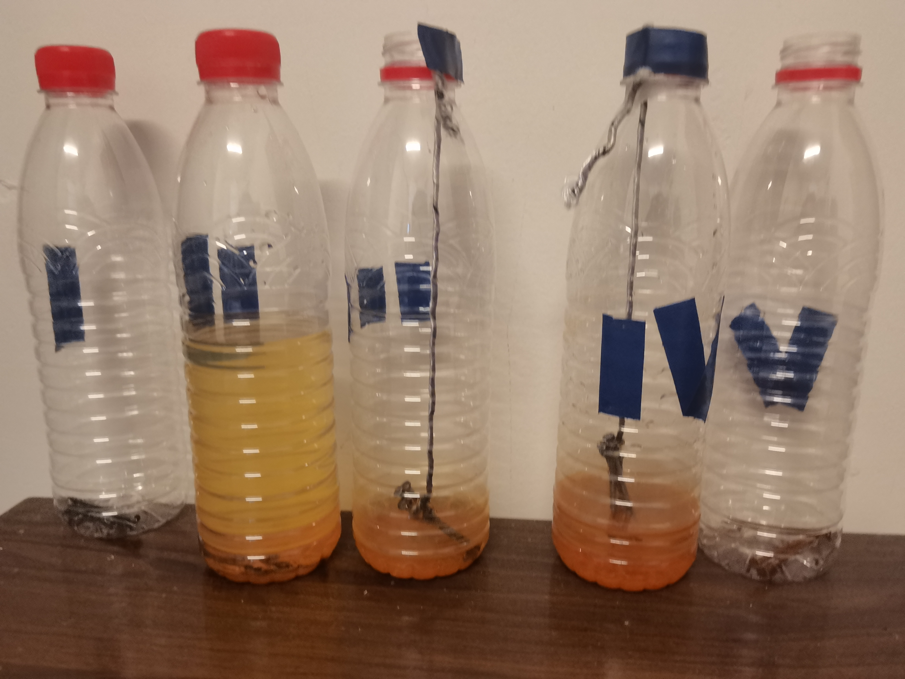
第四天的样子已经开始接近结果。第一瓶仍然似乎没有生锈。其他的正在加剧
观察结果
| 天数 | 第一个瓶子 | 第二个瓶子 | 第三个瓶子 | 第四个瓶子 | 第五个瓶子 |
|---|---|---|---|---|---|
| 第一天 | 没有生锈 | 基本没有生锈 | 浸入水中的部分开始生锈 | 浸入水中的部分略微生锈 | 完全生锈 |
| 第二天 | 没有生锈 | 部分生锈 | 浸入水中的部分部分生锈 | 浸入水中的部分开始生锈 | 完全生锈 |
| 第三天 | 没有生锈 | 部分生锈 | 浸入水中的部分部分生锈 | 浸入水中的部分部分生锈 | 完全生锈 |
| 第四天 | 没有生锈 | 部分生锈 | 浸入水中的部分几乎全锈 | 浸入水中的部分部分生锈 | 完全生锈 |
| 第五天 | 基本没有生锈 | 基本生锈 | 浸入水中的部分全锈 | 浸入水中的部分几乎全锈 | 完全生锈 |
| 第六天 | 基本没有生锈 | 基本生锈 | 浸入水中的部分全锈 | 浸入水中的部分几乎全锈 | 完全生锈 |
| 第七天 | 基本没有生锈 | 完全生锈 | 浸入水中的部分全锈 | 浸入水中的部分全锈 | 完全生锈 |
其中，铁钉的环境如实验介绍所说。
得出，洁净的铁钉的生锈需要空气和水分。如果没有足够的水分，铁钉生锈速度极慢甚至无法生锈。 同时，盐水的生锈速度比清水慢。 但是经过浸泡后的铁钉生锈速度远大于洁净（的铁钉）。
实验结果图
| 第一个瓶子 | 第二个瓶子 | 第三个瓶子 | 第四个瓶子 | 第五个瓶子 |
|---|---|---|---|---|
| 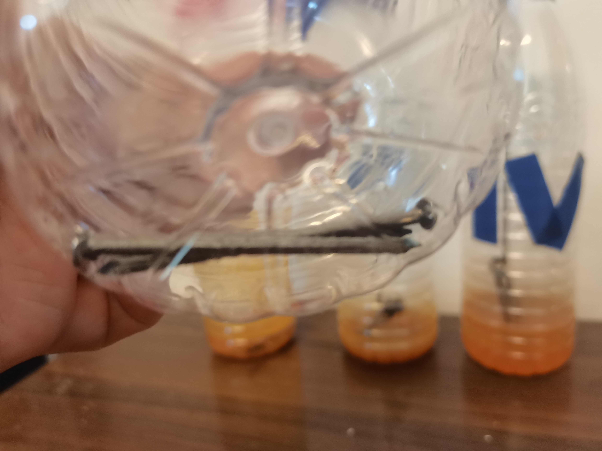 | 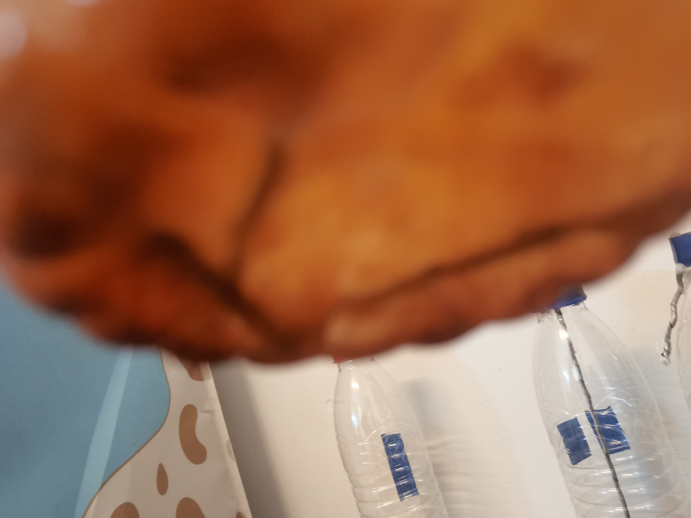 | 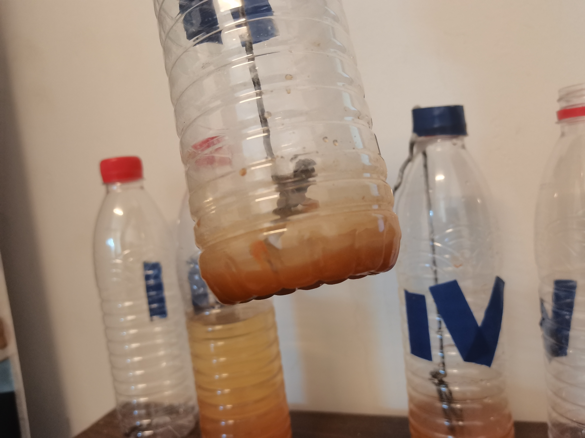 | 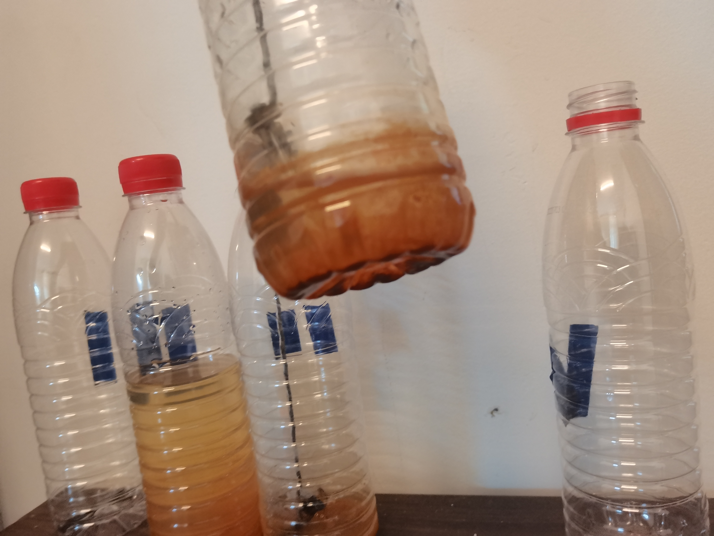 | 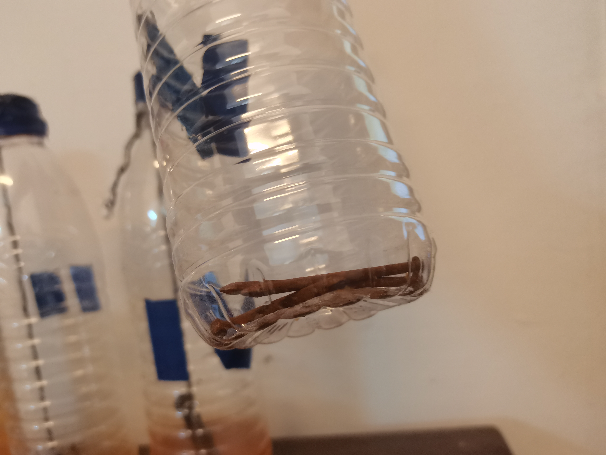 |
生活中的防锈
按照要求，我查阅了生活中的防锈方法。总结如下：
- 电冰箱外壳使用铝合金壳体
- 菜刀擦干后放回
- 剪刀刷漆防护
- 圆珠笔的前面部分涂油
- 部分杯子等使用不锈钢（碳和铁的混合物）